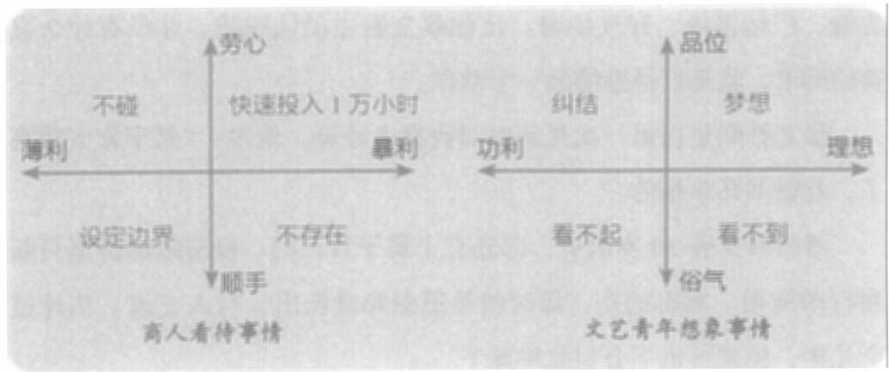

如果存在暴利的空间，并且他知道如何套利，那这件事他就必须做——无论他在这件事上有没有积累。积累不重要，他可以从零开始去学知识，从零开始去拓展人脉。
如果没有暴利空间，但属于顺势而为，那这件事他可以顺手做，但绝不过多投入。
如果既没有暴利空间，也不是顺势而为，那这件事他是万万不做的。
图13-1是一个对照组。你可以看看当时中关村的文艺青年是怎么看待事情，商人又是怎么看待事情的。
所以，虽然那个时候我们在一张桌子上喝茶、谈笑，但可以说我们不是一个物种。蔡文胜是一个赚钱的人，而我是一个做梦的人。
|
 |
图13-1 商人与文艺青年对照
2005年，蔡文胜注意到做视频播放器的冯鑫，花200万元拿下了对方公司20%的股份。3个月之后，他又介绍IDG资本给冯鑫认识，IDG又投了200万美元。IDG入场，让蔡文胜持有的股权大大增值。而且，IDG作为专业机构，熟悉资本道路，后续还可以给冯鑫做辅导。
那个时候，很少有企业能拿到风险投资。拿到风投，被视为了不
384